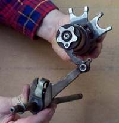
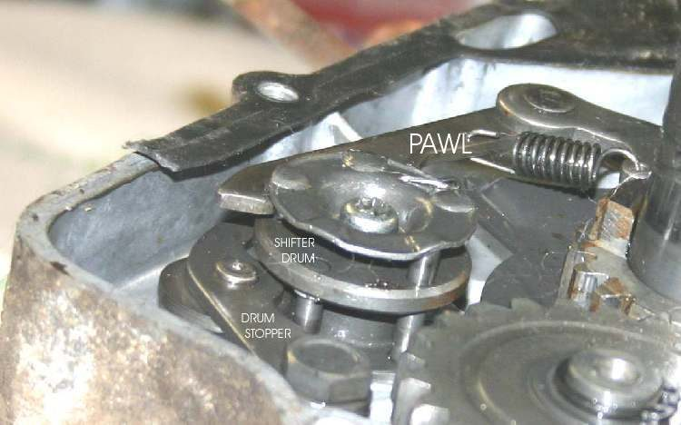
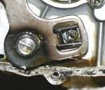
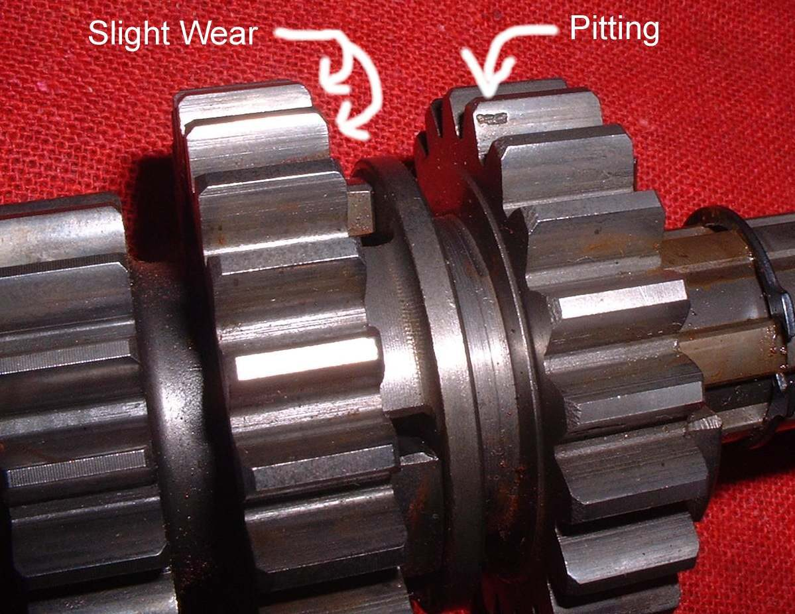

The gear lever turns a shaft. A pawl or ratchet turns the shift drum a set step. Grooves in the drum move the shift forks, and the forks slide the gears in and out of mesh. Wear or a weak spring anywhere in this chain causes missed gears, false neutrals and a lever that does not return. Most shift mechanisms need no adjustment and wear slowly, so look here only when there is a symptom.
Safety
- Drain the gearbox oil first and let the engine cool. Support the bike securely.
- Work carefully with return springs. They can snap free.
- Keep parts in order. Take photos before removing anything.
You need
- Basic hand tools and a tray for parts.
- A shop manual for the shift mechanism of your engine. Types differ: drum with pawl, drum with ratchet, cam plate and quadrant, or ball lock.
- A new side cover gasket and fresh gearbox oil.
Steps
- Check the outside first with the cover on: Check the gear lever and shift linkage. Loose lever, bent shaft or a broken return spring show up here.
- Drain the gearbox oil. Remove the side cover that gives access to the shift parts.
- Find the pawl, the return spring and the detent wheel or plunger. Check that the pawl moves freely and the return spring returns it to the centre.
- Check the pawl and its pins for rounded edges and wear.
- Check the detent wheel or plunger. It should be sprung and move in and out of the drum notches as the drum turns. A weak spring or a worn notch lets the drum float, so the bike jumps out of gear.
- On engines with an adjustable pawl, loosen the locknut, centre the pawl as the manual shows and tighten the locknut.
- Inspect the drum grooves for polish, ridges or burrs.
- Check each shift fork. Look at the fork tips for bright wear marks or a bent arm. Any visible wear on a fork is a reason to replace it.
- Look at the gear dogs and the holes they fit into. Rounded dogs make the bike jump out of gear, usually second, under power. Replace worn parts.
- Refit everything in the same position, with new gasket and oil.
Check your work
- The lever returns to the centre after every shift.
- Each gear engages firmly and neutral is easy to find.
- No oil leaks from the cover.
When to go to a workshop
- Worn forks, drum or gear dogs when the crankcase has to be split.
- A broken gear tooth. The mating gear on the other shaft is usually replaced as well.